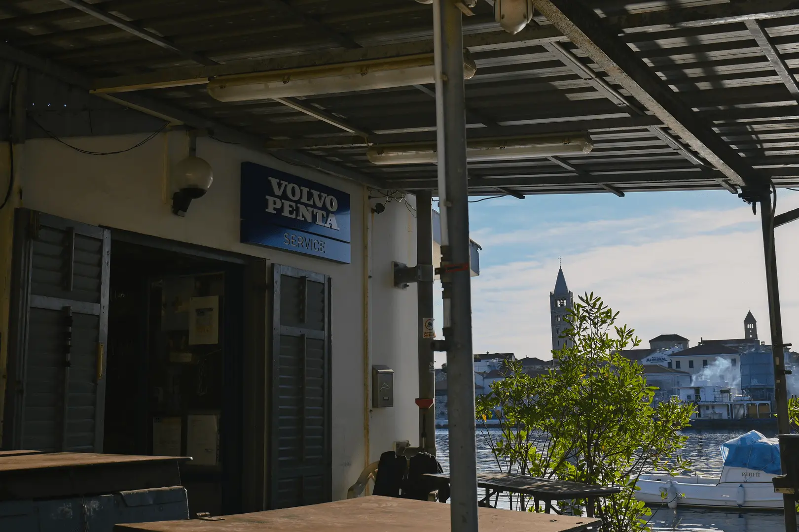
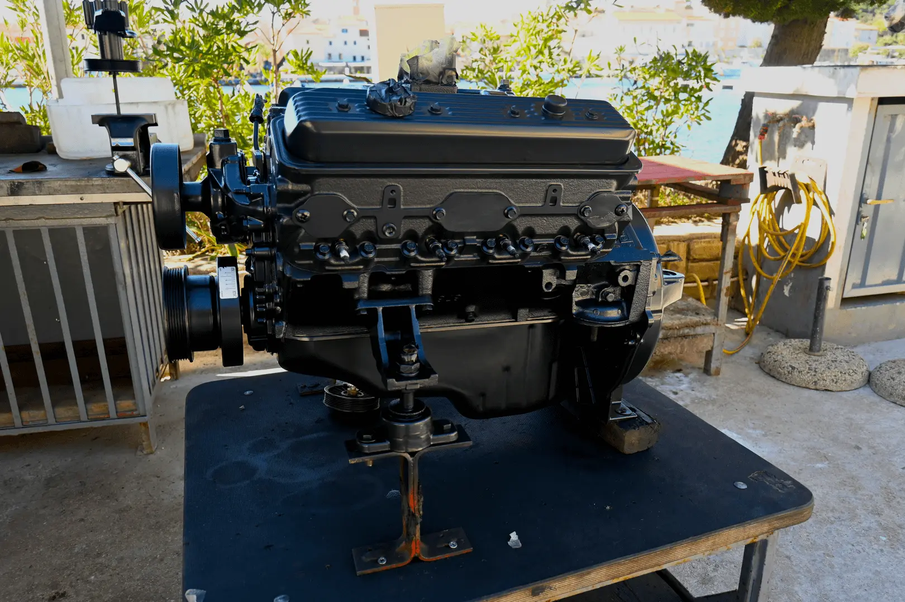
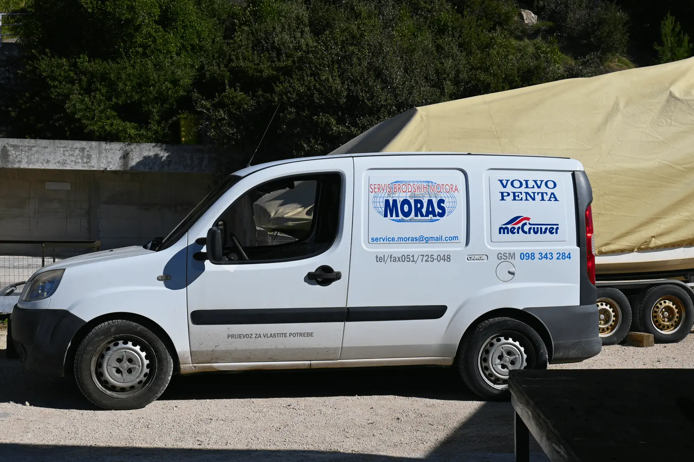

SERVICE MORAS
BOOTSMECHANIKER SERVICE





Offizieller Dienst für
Über uns
Der Bootsmechanikerdienst Moras ist ein seriöser Dienst, der tätig ist über 30 Jahre. Wir sind der offizielle Service für alle Volvo Pentas, Mercruiser, Mercury und Tohatshu Schiffsmotoren.
Wir befinden uns im Haupthafen der Insel Rab und bieten einen aktiven Pannendienst im Hafen selbst oder vor Ort, was in jedem Trockenhafen der Insel möglich ist.
Das Hauptziel dieses Dienstes ist die Verbesserung Ihres Seeerlebnisses
Kontakt
- E-mail: service.moras@gmail.com
- Mobiltelefon: +385 98 343 284
- Service Nummer: 051 725 048
Standort
Adresse
- Šetalište Kapetana Ivana Dominisa 4
- 51280 Rab